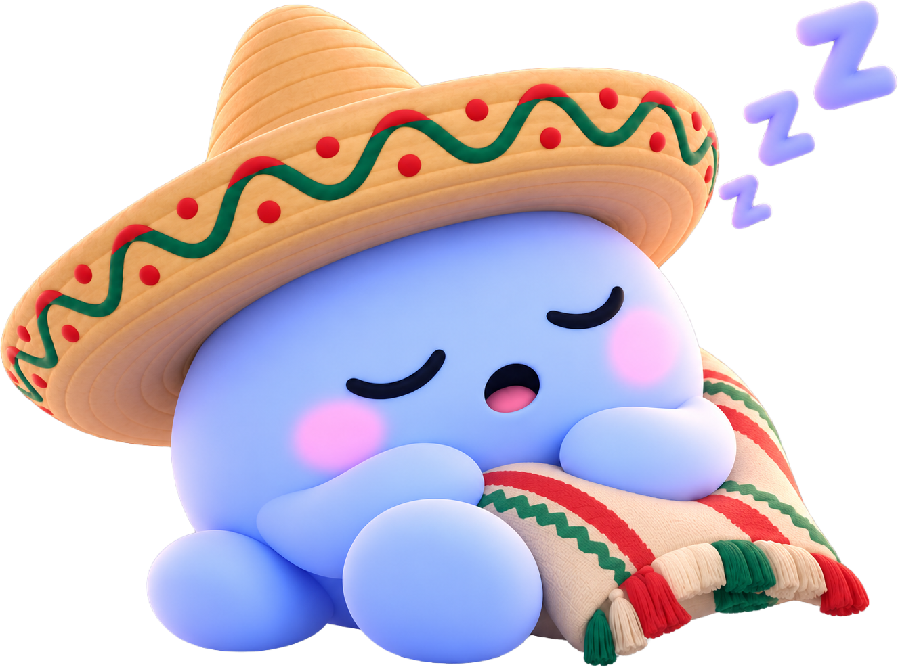

Kuwait
0 h 0 min
de sueño
Un día, un país, una forma diferente de dormir.
Descubre cómo cambia nuestro tiempo de descanso
alrededor del mundo y qué relación tiene con la forma en
que vivimos, trabajamos y distribuimos nuestro tiempo.
Kuwait
0 h 0 min
de sueño
Japón
0 h 0 min
de sueño
México
0 h 0 min
de sueño
Aunque el promedio de sueño es de 7 h 54 min, las jornadas laborales extensas pueden dejar menos tiempo disponible para otras actividades, incluido el descanso. La OCDE señala que las jornadas largas en Japón están asociadas con problemas de equilibrio entre trabajo y vida personal.
Dormir menos de lo necesario también puede tener consecuencias en el cuerpo. En un estudio realizado con adultos urbanos de Kuwait, una menor duración del sueño se relacionó con la obesidad y con diversos factores de riesgo metabólico, como la presión arterial y la resistencia a la insulina.
La ciudad también se lleva algunas horas de la noche. En México, un estudio nacional encontró que el 37% de los adultos reporta problemas de sueño y que quienes vivían en zonas urbanas dormían menos que quienes vivían en zonas rurales.

Hay días que terminan demasiado tarde.
Mañanas que comienzan demasiado pronto.
Horas que se van trabajando, estudiando, viajando, esperando.
Y entre todas ellas, intentamos encontrar un momento para cerrar los ojos.